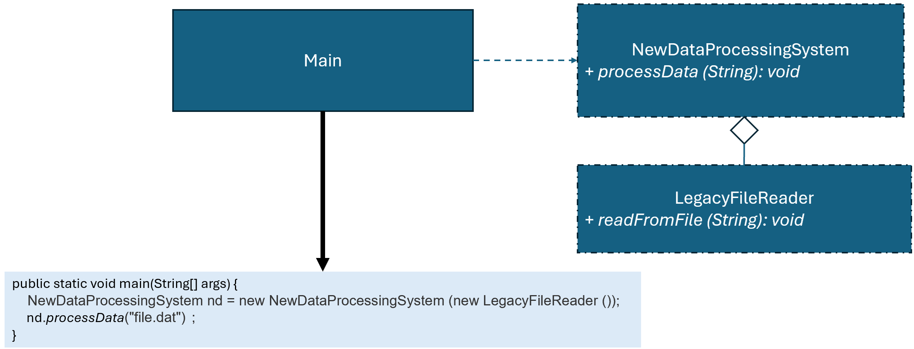

優點
缺點
總評
本次學生回答展現了對題目背景與設計重點的理解，並具備完整的設計敘述，但整體互動偏單向敘述，缺乏協作、批判與認知上的積極參與，未能發揮 AI 作為協同夥伴的潛力。
class LegacyFileReader {
public void readFromFile(String filePath) {
System.out.println("Reading from file: " + filePath);
}
}
interface DataProcessingTarget {
void processData(String file);
}
class LegacyAdapter implements DataProcessingTarget {
private LegacyFileReader legacyFileReader = new LegacyFileReader();
@Override
public void processData(String file) {
legacyFileReader.readFromFile(file);
}
}
class DataProcessingSystem {
private DataProcessingTarget dataProcessingTarget;
public DataProcessingSystem(DataProcessingTarget dataProcessingTarget) {
this.dataProcessingTarget = dataProcessingTarget;
}
public void processData(String file) {
dataProcessingTarget.processData(file);
}
}
class Main {
public static void main(String[] args) {
DataProcessingSystem p = new DataProcessingSystem(new LegacyAdapter());
p.processData("data.txt"); // 顯示 ""Reading from file: data.txt"。
}
}
!@#$報告
新設計有何優點?
這個設計的價值在於：讓舊的檔案讀取邏輯可以直接被新系統使用，同時讓整個系統維持一致的操作方式與未來擴充能力。
在這段程式中，LegacyFileReader 原本只提供 readFromFile()，但新系統 DataProcessingSystem 並不直接使用它，而是統一透過 DataProcessingTarget 這個介面來操作資料。這代表新系統只關心「我要處理資料」，而不關心資料是怎麼讀進來的。
LegacyAdapter 的作用就是轉接，它把 processData() 轉換成呼叫 readFromFile()。這讓舊的類別可以在不修改的情況下，符合新系統的使用規範。也就是說，舊系統被「包裝」起來，變成新系統看得懂的樣子。
這種做法的關鍵好處在於降低依賴關係。DataProcessingSystem 並沒有綁死 LegacyFileReader，而是依賴抽象介面。因此未來如果資料來源改成 API、資料庫或雲端服務，只需要新增新的實作類別（例如 ApiAdapter），就可以直接替換，不需要動到原本的系統邏輯。
同時，這也讓系統更容易維護。當需求變動時，不會去修改既有程式，而是透過新增類別來擴充功能，避免影響既有穩定的程式碼。
總結來說，這個設計把「資料來源的實作」與「資料處理的使用方式」分離，使系統在面對舊程式與新需求時，可以同時兼顧相容性與擴展性。!@#$
請檢視程式碼介面是否違反 Adapter模式，並撰寫報告，討論新設計有何優點?

DataProcessingSystem p = new DataProcessingSystem(new LegacyAdapter( ) );
p.processData("data.txt" ); //顯示 ""Reading from file: data.txt"。